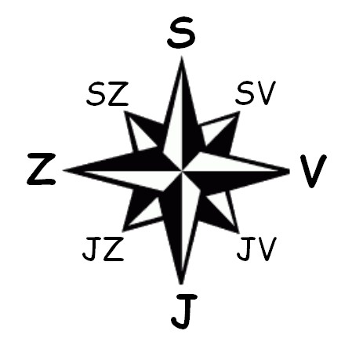

 Ahoj, já jsem Karel. Urči směr, kterým by jsi chtěl/a, abych se vydal. Nabízejí se ti čtyři světové strany - sever, jih, východ a západ. Chceš-li, abych se vrátil na začátek, napiš "start".
Zadej směr (S,J,Z,V)